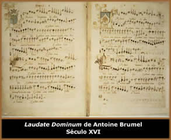

A unificação da música
litúrgica concebida por São Gregório tornou-se
conhecida como Canto Gregoriano. Embora sucessivas pesquisas
tenham alterado pouco à pouco a interpretação
dos neumas (meios de notação musical e
avaliação rítmica usados do século
IX ao XII), há áreas em que as diferenças
entre os investigadores se mantêm até os nossos dias.
O processo de unificação, e sobretudo,
de implantação, foi progressivo e lento, dando lugar
a diversas exceções em que foram reconhecidas liturgias
não gregorianas. É o caso do Canto Visigótico,
que passou a ser conhecido por Canto Moçárabe;
termo anacrônico, anterior à invasão da península
espanhola pelos árabes que se conservou até 1071,
quando foi abolido por Gregório VII. Nos fins do século
XI, esta modalidade só era praticada em poucas Igrejas,
mas foi recuperado pelo Cardeal Cisneros, que fundou a capela
moçárabe da Catedral de Toledo (Espanha) e editou
o Missale e o Breviarium, cantos moçárabes
em 1500 e 1502, respectivamente.
Ao
regulamentar o canto litúrgico cristão, mantém-se
o princípio da homofonia, ao qual se acrescenta a ausência
de acompanhamento instru-mental. É destas características
que vem o nome de Canto Chão, (do latim, Cantus
Planus) utilizado pela primeira vez como sinônimo de
canto gregoriano por Jerônimo de Moravia, por volta de 1250.
Porém, o termo não é muito adequado para
denominar o canto religioso dos séculos XVII e XVIII.
O sistema musical do Canto Gregoriano baseia-se
no sistema chamado Modal, embora tenha sofrido adaptações
sob a forma estabelecida pelos gregos. A primeira diferença
é a do sentido, descendente para os gregos e ascendentes
no gregoriano. Nas duas formas, coincidem no número, oito,
em sua origem. Nestes casos, os ímpares se conhecem como
autênticos e os pares como Plagales, por derivarem
dos primeiros. Juntaram-se, no século XVI, os modos maiores
e menores da música posterior, bem como os respectivos
plagales. Assim se chegou aos doze modos, chamados: dórico,
hipodórico, frígio, hipofrígio, lídio,
hipolídio, mixolídio, hipomixolídio, jónico,
hipojónico, eólico e hipoeólico.
O fato de ter utilizado, para os oito primeiros, as denominações
gregas foi a causa de que se generalizara a idéia da sua
correspondência com os modos gregos.
Mantinha-se a homofonia e o ritmo era baseado na
pronúncia silábica. Introduziram-se as mudanças
com as quais a nota podia corresponder a uma sílaba ou
a um conjunto de sílabas, surgindo a vocalização.
Foram-se acumulando este e outros "desvios" com o decorrer
dos séculos até ao Motu Proprio do Papa
Pio X, no princípio deste século que implicou uma
revisão e reconsideração de todo o corpo
gregoriano, libertando-o de todas as "impurezas" acumuladas
pelo tempo.
Por volta do século IX surgiu a Pauta
Musical. O monge italiano Guido d'Arezzo (995 - 1050), sugeriu
o uso de uma pauta de quatro linhas. O sistema é usado
até hoje no canto gregoriano. A utilização
do sistema silábico de dar às notas deve-se também
ao monge Guido d'Arezzo e encontra-se num hino ao padroeiro dos
músicos, São João Batista:
Ut
queant laxit Ut queant
laxit
Ressonare
fibris
Mira
gestorum Mira gestorum
Famuli
tuorum
Solvi
polluti Solvi polluti
Labii
reatum
Sancte
loannes
Para adequar a sílaba com a pronúncia,
o Ut foi substituído
pelo Do.